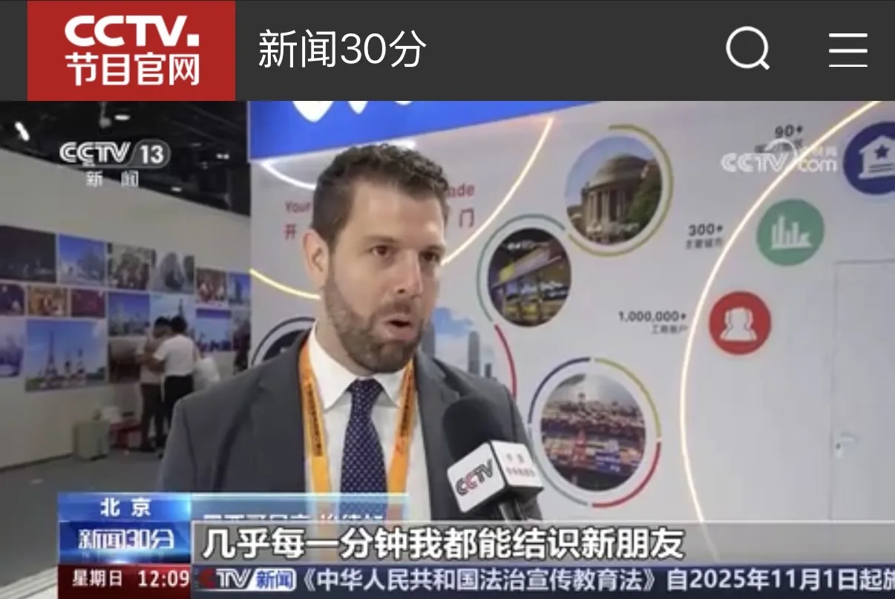
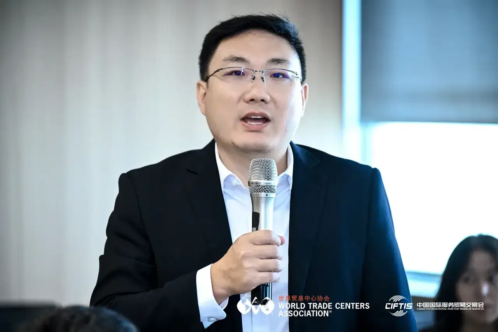
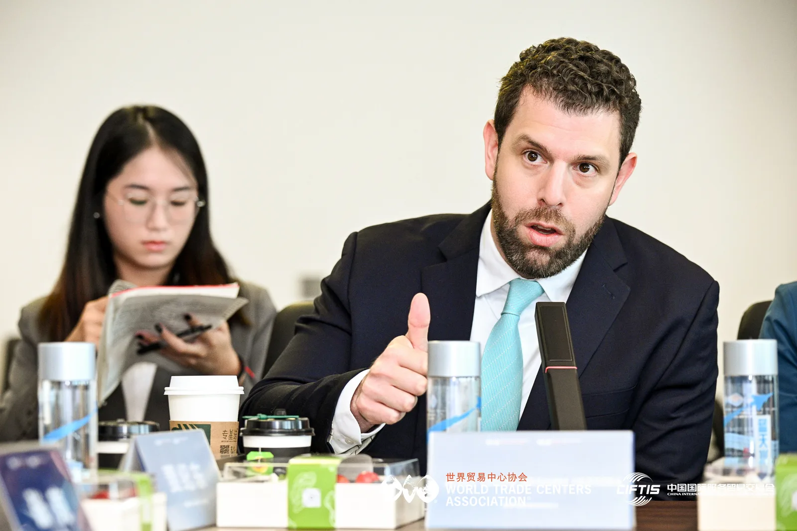
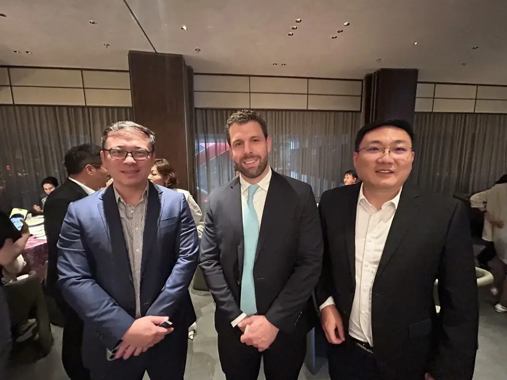

"The public side of CIFTIS is about international cooperation and global connectivity. Behind closed doors, the conversation is about something much more practical: how companies actually enter unfamiliar markets. My in-depth exchange with Edgar Braham of WTC Saltillo reinforced a conviction I have developed through years of working with companies going global: the real barrier is often not a lack of market opportunities, but a lack of trusted, practical and locally connected people."

Large international exhibitions always have two very different stories.
One is the story everyone can see: World Trade Center organizations from different countries gathering at CIFTIS, international business connections becoming more active, and cross-border cooperation gaining momentum.
The other happens in smaller rooms.
At the 2025 CIFTIS, Edgar Braham, CEO of WTC Saltillo in Mexico, came to China and participated in the WTCA program. During the same period, I had the opportunity to sit down with him for a more focused exchange.
I was closely involved in the WTCA program at CIFTIS 2025, and during the same period in Beijing, I witnessed Edgar’s closed-door deep-dive exchange and joint session—an event open only to council members, with no public press release.
I have always believed that these journal entries should be more than event reports.
Public events are naturally where we discuss trends.
Smaller conversations are where we can examine what those trends actually mean for a company preparing to enter a new market.

The Question Behind “Going Global”
Over the past two years, through conversations with companies considering international expansion, I have noticed a recurring pattern.
Companies often think about overseas expansion market by market.
Southeast Asia becomes one conversation.
North America becomes another.
Japan becomes another.
But in reality, these markets do not have to exist as isolated choices.
The more interesting question is how a company can build a path across markets, while relying on people who genuinely understand each local environment.
That was one of the reasons my conversation with Edgar was valuable.
WTC Singapore and WTC Saltillo operate in very different markets.
Singapore sits at the intersection of Southeast Asia and international business.
Saltillo sits within Mexico’s highly industrialized northern region and a broader North American manufacturing ecosystem.
The geography is different.
The business environment is different.
The local questions are different.
And that is precisely why the conversation mattered.
"It is easy to look at the WTCA network as a list of organizations on a map. But the real value becomes visible when you actually know the people behind those locations—when a conversation can continue across borders because there is already a level of trust."
— Dong Lixin (Bruce Dong), Secretary-General & COO, WTC Singapore
A Global Network Is More Than a Map
Public information can tell a company where the opportunities are.
It can tell you about an industry, a region, a free-trade arrangement or a manufacturing cluster.
But information alone does not answer some of the questions that emerge once a company starts moving.
Who understands the local business environment?
Who can help explain how things actually work?
Who knows the right people?
Who can tell you where a seemingly simple issue may become complicated?
And when a company encounters a problem it did not anticipate, who will answer the phone?
These questions are difficult to capture in a market report.
They are much easier to understand through trusted relationships.
That is where I increasingly see the value of the WTCA network.
The network is not simply a collection of locations.
Its real value lies in the people who make those locations accessible.
For a Chinese company considering Southeast Asia, Singapore can provide an internationally connected starting point.
For a company considering North America, a local WTC such as WTC Saltillo can provide a very different perspective—one grounded in the local business environment.
The two roles do not compete.
They can complement each other.

From “Going Out” to “Going In”
I have said many times in conversations with companies that the difficult part of internationalization is not simply going out.
It is going in.
Selling a product overseas is one thing.
Understanding the market is another.
Adapting to local rules, finding reliable partners, understanding customers, building local relationships and developing the ability to operate sustainably in the market—that is where internationalization becomes real.
This is why I believe the most useful international networks are not necessarily the ones that simply offer the largest number of introductions.
They are the ones that can help a company make sense of what comes next.
A company may begin with Singapore.
Its next question may concern Vietnam, Indonesia, Japan, Mexico or the United States.
The geography changes.
The principle does not:
Find people who understand the market, understand the company’s needs, and can help the two sides begin a meaningful conversation.
What I Took Away From That Conversation
My conversation with Edgar did not produce a dramatic announcement.
Nor did it need to.
What it gave me was something more useful: a clearer understanding of how different WTC locations can complement one another when companies think beyond a single market.
That is the part of the global network that is easy to underestimate.
From the outside, the network looks like a collection of cities and institutions.
From inside the network, it can look very different.
It can be a person you already know.
A conversation that can be continued.
An introduction made with context rather than simply a name and a phone number.
A local perspective that helps a company avoid making assumptions before entering a market.
And sometimes, simply knowing that there is someone on the other side of the world who understands what you are trying to do.
That is what turns a network from a map into something useful.
Why This Matters to WTC One Club
This is also why I increasingly see WTC One Club as more than a traditional business club.
The value of a closed network is not that every conversation produces an immediate transaction.
It is that the right people have enough opportunities to meet, understand one another and build trust before an opportunity actually appears.
International business rarely develops in a straight line.
A company may meet someone today and need their help a year later.
A conversation that seems exploratory today may become highly relevant when the company enters a new market tomorrow.
That is why continuity matters.
Trust needs time.
And a genuine international network should create the conditions for that trust to develop.
The public world will continue to tell companies where the opportunities are.
What a trusted business network can add is something different:
context, local knowledge, trusted introductions and people who can help turn an overseas opportunity into a more practical next step.
That is what I took away from the conversation with WTC Saltillo at CIFTIS.
And it is one of the reasons I believe the most valuable part of a global business network is not how many points appear on the map.
It is whether, when you arrive at one of those points, you know someone you can trust.
---